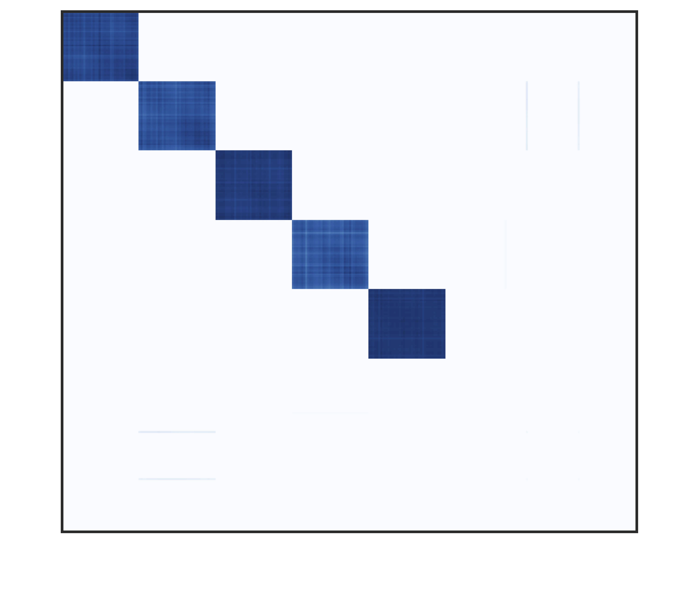
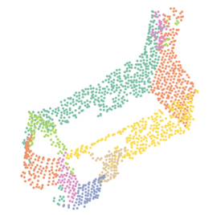

parametric multi model fitting fitting multiple instances of parametric models to data corrputed by noise and outliers Hierarchical clustering in Preference Space T-linkage  Robust Matrix Factorization in Preference Space Robust Preference Analysis Set cover formulation Random Sample Coverage J-linlkage with min-hash for scan2bim Scan2Bim with J-linkage  Dealing with models of different classes Cascaded T-Linkage